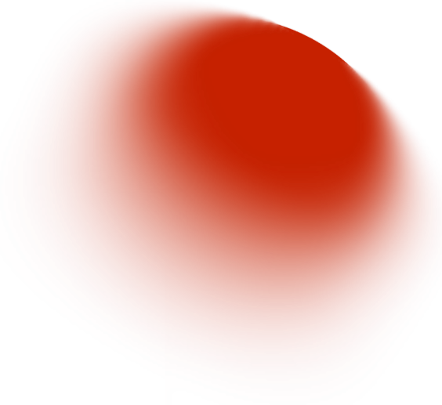

НЕ ЛЮДИ. НЕ ПРОГРАММА. КОЛЛЕКТИВНЫЙ СБОЙ НА ГРАНИ ЦИФРОВОГО И АНАЛОГОВОГО.
ИХ МУЗЫКА - ЭТО ЗВУК ПЕРЕГРУЗКИ, ПРОТОКОЛ СОПРОТИВЛЕНИЯ И ФИДБЭК ОТ РЕАЛЬНОСТИ,
КОТОРОЙ БОЛЬШЕ НЕТ.
[01]
ГЛАС
ИСТОЧНИК ОСНОВНОГО ШУМА. ПРЕОБРАЗУЕТ БОЛЬ ДАННЫХ В ЧИСТУЮ АГРЕССИЮ. ЛИЦО-МАСКА — ВИЗУАЛИЗАТОР ВОКАЛА В РЕАЛЬНОМ ВРЕМЕНИ

[02]
РИФФ
ГЕНЕРАТОР ИСКАЖЕНИЙ. ПРЕВРАЩАЕТ АНАЛОГОВЫЙ СИГНАЛ В ЦИФРОВОЙ ХАОС. КАБЕЛЬ — ЭТО ПРОДОЛЖЕНИЕ НЕРВНОЙ СИСТЕМЫ.
[03]
БИТ
ХРАНИТЕЛЬ РИТМА СИСТЕМЫ. ЕГО HEARTBEAT — ЭТО МЕТРОНОМ ДЛЯ АПОКАЛИПСИСА. СОБИРАЕТ ЗВУКИ УМИРАЮЩИХ ТЕХНОЛОГИЙ.
[04]
ШУМ
СОЗДАЕТ ПРОСТРАНСТВО. ЕГО ТЕРРИТОРИЯ — БЕЛЫЙ ШУМ МЕЖДУ ТРЕКАМИ. ДЕЛАЕТ ТИШИНУ НЕВЫНОСИМОЙ.
НЕ ЛЮДИ. НЕ ПРОГРАММА. КОЛЛЕКТИВНЫЙ СБОЙ НА ГРАНИ ЦИФРОВОГО И АНАЛОГОВОГО. ИХ МУЗЫКА -
ЭТО ЗВУК ПЕРЕГРУЗКИ, ПРОТОКОЛ СОПРОТИВЛЕНИЯ И ФИДБЭК ОТ РЕАЛЬНОСТИ, КОТОРОЙ БОЛЬШЕ НЕТ.